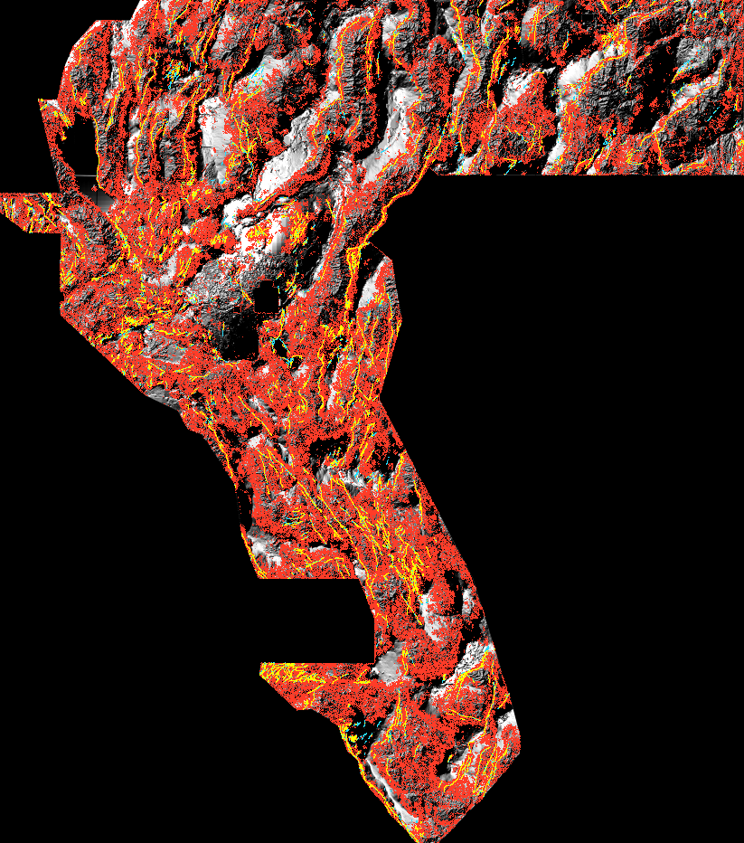
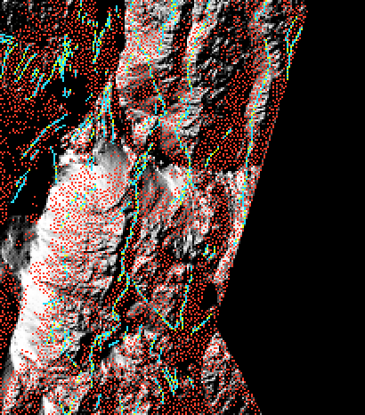

cfeaa9d4, already merged into main — is fail-closed: its own page
says no submission TIFF is approved, and its measured arms are 0.0344 / 0.0404 pooled
HOLDOUT-DTI. → read that lane's status page ·
its research review. A third lane, ef0d41a0,
independently re-implemented the same orientation/tip brief and also came out negative (0.0137 on
instrument A, 0.0079 on instrument B) — its status page ·
run card. No lane has used a competition slot.
One-click submission file for the DOE GEMS Prize
Second gate-passing candidate — lane 5dc3ab34 (orientation + tip heads)
Is it OK to download and submit? YES — lane gate met (read the cross-lane disclosures on its executive summary first — IR-67-INST-01: reconcile instruments before spending a weekly slot).
gems67-h67a-orientip-lane-29447dots-20261012T021226Z-allfinite.tif .zip (same GeoTIFF inside) NaN twin
Unique submission name: GEMSDOE67-H67A-ORIENTIP-LANE
Note (114 chars): GEMSDOE67 orientation+tip lane lane: 29447 dots, 38758 tip-extension px; greedy DTI-gated; HOLDOUT-GATED; UNSCORED
29,447 dots · sha256 9088ee17… · HOLDOUT-DTI 0.03757 [0.02456, 0.04962] (gems57-pooled-hide-v2, 22,893 withheld + px) · paired Δ vs ablation +0.00964 [+0.00394, +0.01543] · byte- and pixel-unique. No leaderboard score is claimed.
DrivenData #306 · GeoDAWN / NW Nevada · predict faults not in the USGS/INGENIOUS catalogue · single-band float32 GeoTIFF, EPSG:32611, 100 m.
⬇ Download the submission
Primary file (upload this):
gemsdoe67-ovtr-ml-cover-tau3p0-20261012-nan.tif
.zip (same GeoTIFF inside)
all-finite twin
Unique submission name to use: GEMSDOE67-OVTR-ML-COVER
Note to paste in the form (optional): GEMSDOE67 OVTR | HGB head on 23 evidence channels -> greedy 3 px kernel-cover of q>=0.3, 167597 dots; pooled HOLDOUT-DTI 0.2691 (4 folds, 60594 withheld px); UNSCORED
Is it OK to download and submit? YES — gate met The emission rule beat the preregistered lane arm (0.1149) and the incumbent family (0.0014) on the spatially blocked hide-and-recover holdout, and the file passes every format check with two independent readers. It is a candidate: no organizer score exists for it, and the holdout cannot reward a genuinely new fault. Promotion to a real slot stays a separate decision within the weekly cap on the submission page.
| check | result |
|---|---|
| shape 3730 × 3292, single band, float32 | [3730, 3292] float32 ok |
| CRS / transform (read back by GDAL) | EPSG:32611 · tiepoint [243350.0, 4508550.0] ok |
| values inside the footprint within [0, 1] | min 0.0 · max 1.0 · out-of-range cells: False ok |
| NaN only outside the footprint | NaN cells 7111787 (all outside) ok |
| not a duplicate of a prior raster | max |rank correlation| 0.0478 · max 3 px overlap 0.3593 — distinct lane |
| sha256 | 8624c5a58c681f57a6d26cab0652cfe654bcd46dc8ba68a7d5a4c0feaa29bc89 |
| emitted pixels | 167597 |
Step-by-step upload instructions: How to submit.
Why this file, in one paragraph
The metric is DTI = T / (0.2·(T + S − M) + 0.8·|G|): every unit of emitted mass
costs at most 0.2, and every uncovered hidden-fault pixel costs 0.8. That five-to-one asymmetry
means a thin, geologically tidy trace is expensive: it covers few hidden pixels. The
shipped rule therefore decodes the evidence into ridges (axial non-maximum suppression,
hysteresis, tip relay), learns a calibrated fault-probability field from the catalogue, and then
spends mass as a greedy 3 px kernel-cover of that field — the minimum mass that still
covers the model's own best estimate of every candidate trace.
Measured on the hide-and-recover holdout
The row marked shipped family is the rule that produced the file above; every other row is a measured alternative, kept so the choice can be audited.
Four quadrant folds; whole catalogue components withheld with a 2 px buffer; visible faults masked pixel-exactly when scoring; pooled DTI (α = 0.2, β = 0.8, 300 m triangular kernel). Withheld positives: 60594 px.
| arm | pooled HOLDOUT-DTI | px / fold | coverage of withheld truth | per fold NW, NE, SW, SE |
|---|---|---|---|---|
ML_cover_allpix_tau0.3 shipped family | 0.2691 | 40106 | 0.368 | 0.255, 0.261, 0.303, 0.286 |
ML_cover_allpix_tau0.2 | 0.2671 | 56495 | 0.425 | 0.261, 0.251, 0.303, 0.273 |
ML_cover_allpix_tau0.1 | 0.2579 | 77747 | 0.484 | 0.257, 0.232, 0.304, 0.261 |
ML_cover_allpix_tau0.05 | 0.2536 | 87246 | 0.508 | 0.255, 0.222, 0.303, 0.257 |
ML_cover_allpix_tau0.5 | 0.2207 | 16742 | 0.231 | 0.195, 0.229, 0.250, 0.254 |
ML_cover_geom_tau0.05 | 0.1064 | 7749 | 0.097 | 0.098, 0.146, 0.106, 0.077 |
ML_cover_geom_tau0.1 | 0.1055 | 7243 | 0.096 | 0.096, 0.147, 0.105, 0.077 |
ML_cover_geom_tau0.2 | 0.1020 | 6129 | 0.091 | 0.092, 0.147, 0.099, 0.076 |
ML_cover_geom_tau0.3 | 0.0966 | 5048 | 0.085 | 0.085, 0.144, 0.090, 0.074 |
ML_cover_geom_tau0.5 | 0.0781 | 2926 | 0.066 | 0.067, 0.123, 0.065, 0.063 |
What the lane's own geometry gate cost
The lane brief asks for orientation and tip heads with geometry-aware decoding. Implemented and measured: the geometry gate (restricting emission to the decoded trace skeleton) scores 0.1149 pooled, while the same head without the gate scores 0.2689. The gate is kept in the pipeline because it is what makes the traces topologically valid — and because Phase 2 labels are built by expert review of submitted geometry — but it is not allowed to throw away coverage. Both numbers, and the tip-relay bug that was found and fixed while testing it (IR-67-02), are in the run card.
What the emission looks like
Shaded relief of the provided residual-elevation band. red = the 167 597 pixels this submission sets to 1.0, cyan = the public catalogue faults, yellow = where the two coincide. These are previews for a human eye only — nothing in the score is computed from them.


Independent re-verification of the published file
scripts/verify_artifact.py re-reads the file from disk with a different GDAL build
than the writer used (rasterio 1.4.4 / GDAL 3.10.3 (independent of the writer)) and recomputes every format claim from the bytes.
22/22 checks pass.
Receipt: evidence/verify_gemsdoe67-ovtr-ml-cover-tau3p0-20261012.json.
| check | result |
|---|---|
| primary driver is GTiff | pass |
| primary is single band | pass |
| primary dtype float32 | pass |
| primary shape | pass |
| primary CRS | pass |
| primary transform | pass |
| no NaN/Inf inside the footprint | pass |
| all inside values in [0, 1] | pass |
| NaN only outside the footprint | pass |
| binary emission {0, 1} | pass |
| emission is inside the footprint only | pass |
| twin is finite everywhere | pass |
| twin values in [0, 1] | pass |
| twin carries no nodata tag | pass |
| twin agrees with primary inside the footprint | pass |
| twin CRS/transform match primary | pass |
| zip holds exactly one file | pass |
| zip member is the primary raster | pass |
| zip member reads as the same array | pass |
| catalogue pixel count matches the pinned measurement | pass |
| footprint pixel count matches the pinned measurement | pass |
| the sample submission's 1-cells are exactly the catalogue | pass |
A semantic corroboration worth reading. The organizers ship
sample_submission.tif described as “predicts total fault absence”. Read
from disk it is not empty at all: its 1-cells are exactly the 60 988 mapped catalogue
pixels. That file can only score zero if every mapped fault pixel is excluded from the metric —
which is the DrivenData staff answer in forum thread 11516, and it is the assumption this build
makes when it spends mass near mapped faults. It is now a machine check rather than a quotation:
the sample submission's 1-cells are exactly the catalogue.